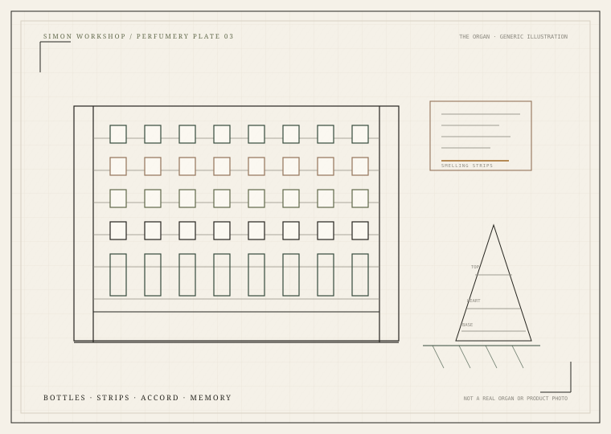

CHAPTER 03 · PERFUMERY / 结构与创作
调香体系Perfumery
香调是行业的描述体系，不是化学分类。这里把香调轮盘、经典和弦、浓度、挥发、定香与嗅觉疲劳拆开说明——但绝不提供看似精确、实则没有依据的“万能配方”。
FAMILY WHEEL / 香调轮盘
点击一个香调，展开它的子香调与代表原料 INTERACTIVE
主分类是行业的沟通语言；边界会因教材、品牌与地区而不同。点击扇区或右侧子香调，再进入原料/分子详情。
FIFTEEN FAMILIES
十五个主香调 FAMILIES
每个香调都可能有相反的风格：清透/浓郁、干燥/甜润、自然/合成。分类是起点，不是结论。
STRUCTURE / 香水结构
前调、中调、后调不是三个抽屉 TIME

FIELD NOTE / 自绘视觉笔记
调香台不是配方的自动售货机
瓶、闻香纸、金字塔与记忆共同构成调香的语言。真正的配方需要小样、稳定性、安全与法规评估，不能从一张图里推导出来。
全部插画由项目内 SVG 绘制；没有使用 AI 生成的假植物照片、假文物或伪造化学结构。
TEMPORAL MODEL
金字塔是模型，不是时刻表
高挥发材料先被闻到，低挥发材料留得更久；但材料可以横跨多个阶段，皮肤、温度、浓度与嗅觉适应都会改变体验。前调、中调、后调更适合作为“结构沟通”，而不是严格时间分段。
读结构知识 →CONCENTRATION / 浓度
没有全球统一的分界
| Parfum / Extrait | 常见约 15–30%（品牌差异大） |
|---|---|
| Eau de Parfum | 常见约 10–20% |
| Eau de Toilette | 常见约 5–15% |
| Eau de Cologne | 常见约 2–5% |
| Eau Fraîche | 常见约 1–3% |
这些是常见范围，不是法律标准。不同品牌、市场与作品可能完全不同；浓度高也不等于扩散强。
CLASSIC ACCORDS / 经典和弦
十二种气味目标，十二种以上的构建方式 ACCORDS
不提供唯一标准配方。每种和弦给出目标、材料方向、风格变体、案例与限制。
ACCORD LAB / 和弦实验室
选几种材料，看看它们可能如何相遇 LAB
用于辅助构思，不是实际调香模拟器。它展示香调重叠、相关和弦与潜在张力，不生成比例或配方。
材料盘
从天然原料数据库选择 2–6 种材料。这里只看“气味/香调关系”，不计算化学稳定性或安全用量。
材料各自的气味标签、香调、关联分子来自本数据库；组合建议是启发式关联，不是经过感官测试的配方。
PERFUMERY NOTES / 调香知识
从挥发到平衡，从定香到疲劳 NOTES
香调分类是行业描述体系，不是严格的化学分类。CLASSIFICATION ≠ CHEMISTRY